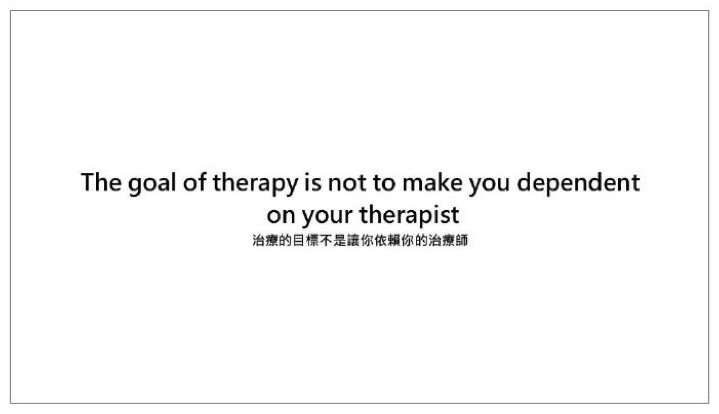
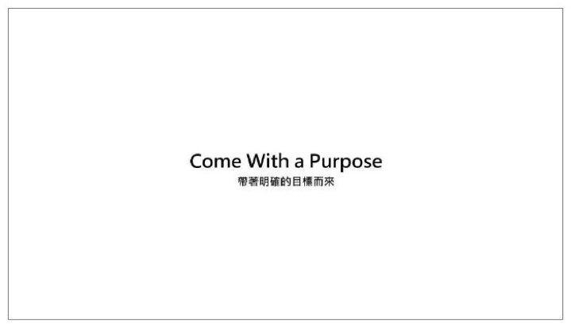
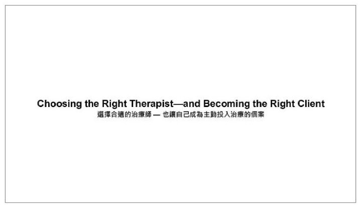
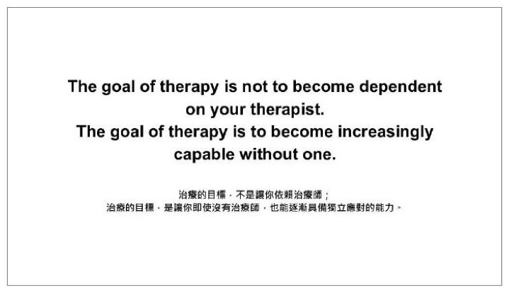

第 8 場・
如何提升諮商治療的參與及效益
Therapy: How to Get the Most Out of Therapy
Barry Fell
美國猶他州 Telos 北校區執行總監
從治療裡能拿到多少，關鍵在來談的人自己帶了什麼進來。
Barry Fell 用自己的書名破題：治療是改變人生、一種生活型態，還是浪費時間？他說三種答案都可能成立，差別在於來談的人自己帶了什麼進來。這一場談的就是該帶的五件事，以及怎麼看出你找到了對的治療師。
- 本場錄音從講者自我介紹講到一半才開始，前段沒有錄到。
- 本場沒有錄到聽眾提問，因此沒有問答整理。
重點整理
01主角不是治療師

- 講者以自己的書名破題：治療是改變人生、一種生活型態，還是浪費時間？他說三種答案都可能成立。
- 他在研究所看一位名師的治療錄影帶，大師只問了一句這週過得如何，其餘時間都在聽。
- 全場的核心主張是：治療的目標不是讓你依賴治療師，而是讓你在沒有治療師時越來越有能力。
- 二十年看下來，獲益多寡最大的差別不是智力或問題嚴重度，而是明白治療不是別人施加在自己身上的事。
The therapist was never supposed to be the hero.
本盟譯治療師從來就不該是那個主角。
02來談的人該帶的五件事

- 原則一是帶著目的而來：他用計程車比喻，沒有說出目的地就到不了；期待錯配時兩邊都會挫折。
- 原則二是完全坦誠：摘下面具，因為治療師只能和真正走進診間的那個人工作。
- 原則三是願意學習：理解很重要，但真正帶來改變的是練習。
- 原則四是預期不適，因為成長需要阻力；原則五是定期檢視自己到底有沒有在改變。
The office is the classroom, life is the examination.
本盟譯診間是教室，生活才是考場。
03怎麼知道找到對的人

- 他刻意不從學位問起，改提三個自問，用來判斷自己有沒有找到對的治療師。
- 第一問是我能不能信任這個人；他說治療關係的品質是治療能不能成功最強的預測因子之一。
- 第二問是我的治療師有沒有清楚的流程；學派本身沒那麼要緊，要緊的是他有沒有想過的架構。
- 第三問是我到底有沒有在改變；他說這可能是三個問題裡最重要的一個。
The exact model matters less than many people think.
本盟譯用哪一個學派，遠不如多數人以為的那麼要緊。
04治療不會改變人生，人會

- 結論段他把治療放進更大的框架：每個文化都在追求智慧，而智慧不只是知識，是學會好好生活。
- 他說治療在最好的狀態下，是通往智慧的一條路。
- 他回到書名的三個問題給出結論：治療本身不會改變人生，是人在改變。
- 所以該問的不是治療對我有沒有用，而是我願不願意成為能從治療裡獲益的那種人。
…we can always control how we respond
本盟譯我們永遠可以決定自己怎麼回應。
現場問答
本場沒有錄到聽眾提問，因此沒有問答整理。
帶走的一句
The goal of therapy is not to be dependent on your therapist.
本盟譯治療的目標，不是讓你依賴你的治療師。